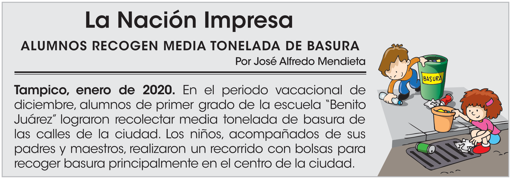
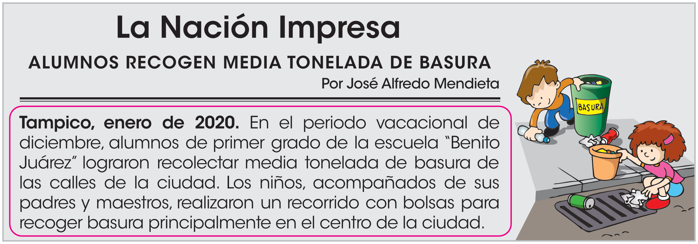

Continuar
¿Cuál es el nombre del periódico?
{{i}}
¿Cuál es el título de la nota informativa?
{{i}}
¿De qué lugar habla la nota?
{{i}}
¿Quién es el autor de la nota?
{{i}}
¿Por qué el título de la nota es más grande y está resaltado?
{{i}}
¿De qué otra forma podemos llamar al título de la noticia?
{{i}}

¿Cómo se le llama al texto que está encerrado en color rosa?
{{i}}
¿Qué se informa en la noticia?
{{i}}